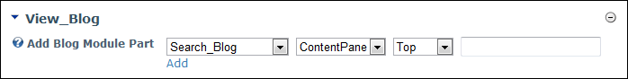

Adding a Blog Module Part
How to add one or more individual modules which are part of the Blog module suite. Note: You must be a Page Editor tor Administrator to perform this task.
- Go to the View_Blog module.
- At Add Blog Module Part, complete the following steps (use fields from left to right):
- At the first drop down list, select the required Blog module part.
- At the second drop down list, select the pane to add the Blog module part to.
- At the third drop down list, select where to insert the Blog module part.
- In the text box, enter the title for the blog module part. The default option is "Title". Leave blank to use the standard title for this blog module part. E.g. Search_Blog, New_Blog, etc.
- Click the Add link.

Adding a Blog Module Part